Tribi App
About the Project
The goal of this project was to create a digital product to improve the experience of people planning financially in groups. When our team got together and was talking about the issues some of us faced while planning group activities, we thought this is a great opportunity to bring digital to the rescue. There are a lot apps that allow payment transfers, like Cash App and Venmo, but there is still this sense of uncomfortability and awkwardness when asking people tol pay you back. That is when we thought we should come up with a solution to this problem.
The Idea
Our idea was to design an app to create a pleasing experience for people planning activities in groups and to ease the financial aspect of paying in groups.
Tools
Figma, Miro, Storyboardthat, Trello
Deliverables
User Research (Interviews + Surveys) & Analysis, Competitor Analysis, Persona Creation, User Flow, Mobile User Experience Design (UI/UX), Wireframing, Prototyping, User Testing.
My Responsibilites & Team
The Team:
~ Nethra Thenappan - UI/UX Designer
~ Mia Norish - UI/UX Designer
~ Jack Kenny - UI/UX Designer
~ Adrian Larkin - UI/UX Designer/p>
My Responsibilities:
~ Defining the scope & Strategy + Planning the project
~ Conducting User Research (User Interviews and Surveys), Competitor Analysis, Persona Creation
~ Delivering solutions through UX Design methods and techniques (Userflows, Interaction Design, Wireframing, Prototyping, User Testing and Visual Design)
The Design Process
We followed a User Centered Design Process.
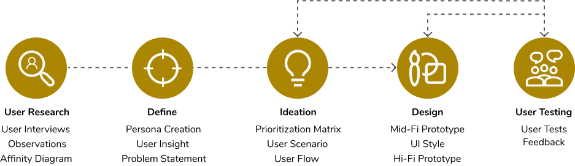Step 1: User Research
We first conducted 5 virtual interviews and surveyed 29 participants, ages 24-58, who are familiar with payment apps to find answers to how we might be able to help simplify the process of paying in groups.
User Interviews
Affinity Diagram
To better understand our user research interviews we sorted our users’ responses into an affinity diagram.
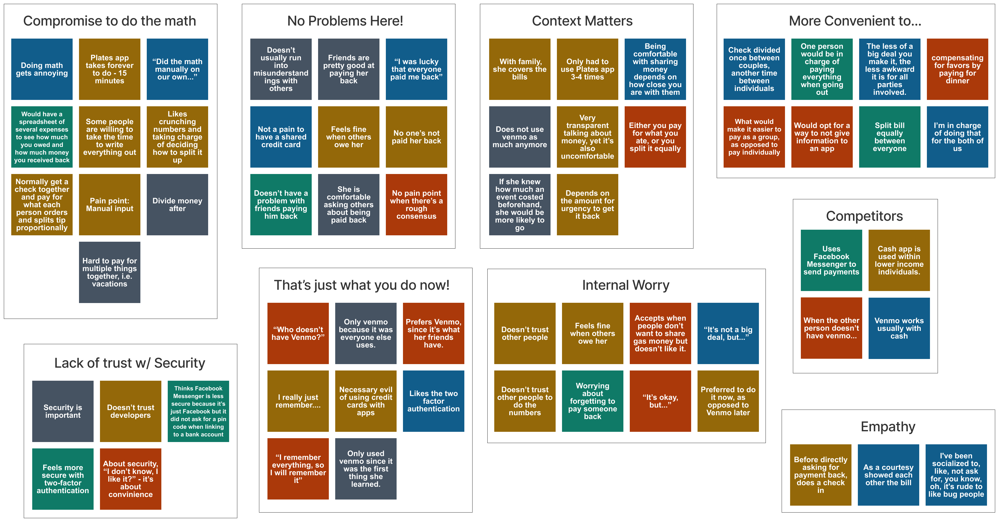User Research Analysis
From these interviews, we learned that users were uncomfortable talking about money with friends; in other words, they often don’t openly communicate about group savings or purchases with other group members. From our surverys we learned 79% of users don’t have tool to help them through group purchases. Users need a way to conveniently manage finances in a group or pair because transactions can be complicated to balance.
Step 2: Define
We took our user research findings to create a persona and defined our problem statement.
Persona Creation
Based on my gathered research data, I formulated the following Persona:
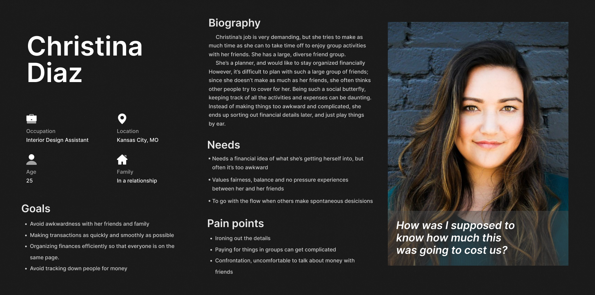Key Findings
I analyzed my research data and learned the following:
User Insight
Users need a way to conveniently manage finances in a group or pair because transactions can be complicated to balance.
During interviews, we discovered that a majority of individuals struggle to sort group purchases which results in anxiety and internal worry.
Therefore, we believe that people have limited resources to help them make group purchases and would feel more comfortable if there was a way to sort out group purchases in a convenient and fair way, and that I might be able to help if we developed an app that would allow users to easily connect with friends and distribute group purchases.
We might do this by helping users reach out to their friends to sort out group purchases beforehand. Doing this will allow users to focus more on their group experience rather than the payment.
Problem Statement
Our app was designed to balance and streamline group or paired payments. We observed that users are uncomfortable talking about finances with friends and family, and that they compromise with unbalanced solutions, even though they’d prefer to manage finances in a more preemptive manner. How might we help individuals address group expenses so that users make more group or pair purchases, they continue to make payments with the same groups, and they manage how much money they have as a group or pair more often?
Step 3: Ideation
Our team then discussed the possible solutions to our users’ problems.
Competitor Analysis
Our team first wanted to see what the market was looking like and wanted to conduct a competitor analysis. Although some apps do allow users to split payments, we knew from our initial survey that 71% of users don’t already use an app like that. User didn’t have an app that allowed them to submit payments from multiple users simultaneously, or plan for group expenses. We conducted a SWOT analysis and compared direct and indrect competitors.
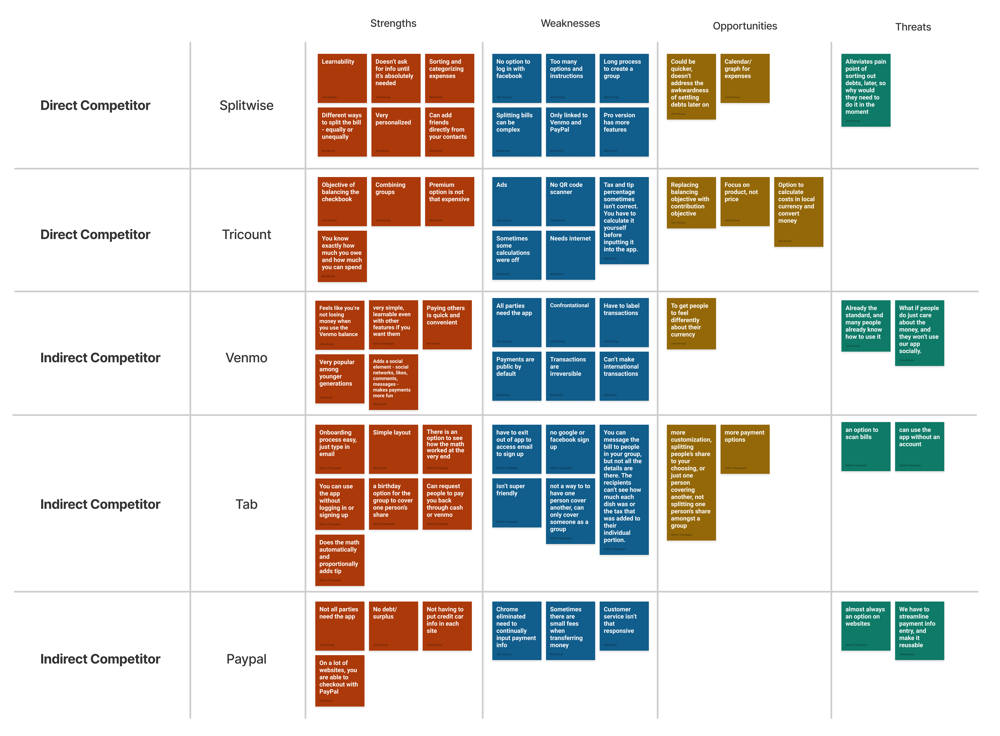Brainstorm
We brainstormed through the I Like, I Wish, What If Method
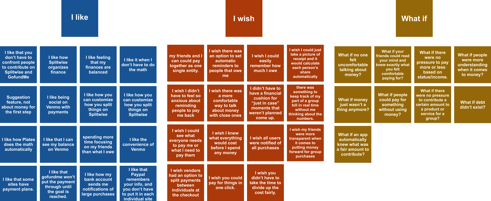Feature Prioritization Matrix
After brainstorming, we dot voted as a group and sorted our solutions based on value and effort.
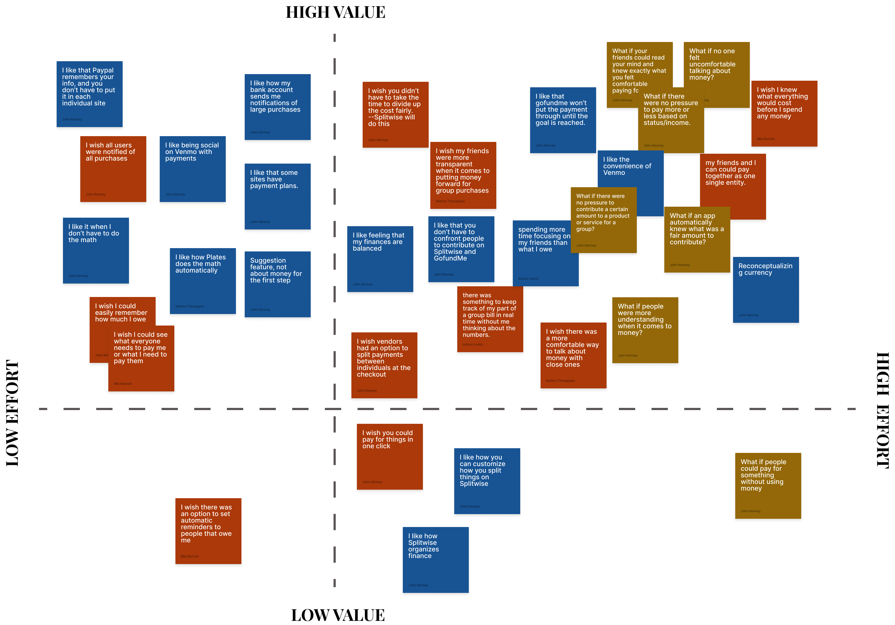Our Solutions
We noticed Paypal and Gofundme had distinctive features which satisfied the need to pay conveniently on a web browser without downloading the app, and returning funds if the goal was not reached. Through our feature prioritization matrix, we decided to go even further by getting all the contributions upfront before the purchase is made, since users expressed the need for knowing from the get go how much things would cost.
User Flow
Our group created 3 different user flows because we wanted to base it off different scenarios. Each flow gives a different point of view as if you were the user.
1. Group Creater
The first flow is in the perspective of the group creater. The group creater can either sent a goal amount for their group or set it as unlimited amount and send a link to their friends to pitch in. Once the group reaches their goal or, if there is no goal set, once the group creator closes the group, the group creator will have the pool of money to make the group purchase.
2. Group Member
This is the perspective of receiving a link from a friend. Since we noticed users were uncomfortable talking about money with others, we sought a solution to try to alleviate the pain point. Once the user clicks on the link we would have a screen describing the purchase and who is participating so that way users can think of the idea of purchase, not just the payment as the first interaction.
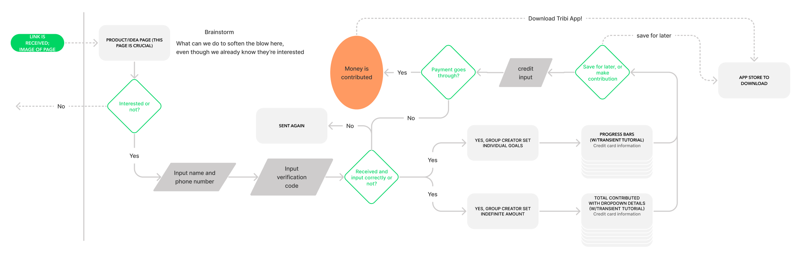3. On a website
The third flow is for fullfilling the need of users to pay simultanesously on the spot. This user flow is in the perspective of a user making a payment on a website using the Tribi payment option.
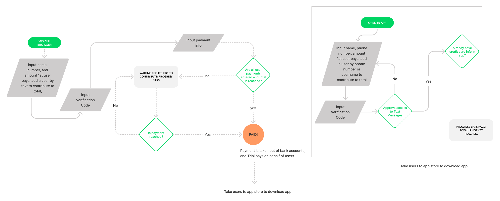User Journey Map
To have a better understanding of how our user will be interacting with our app we created a user journey map
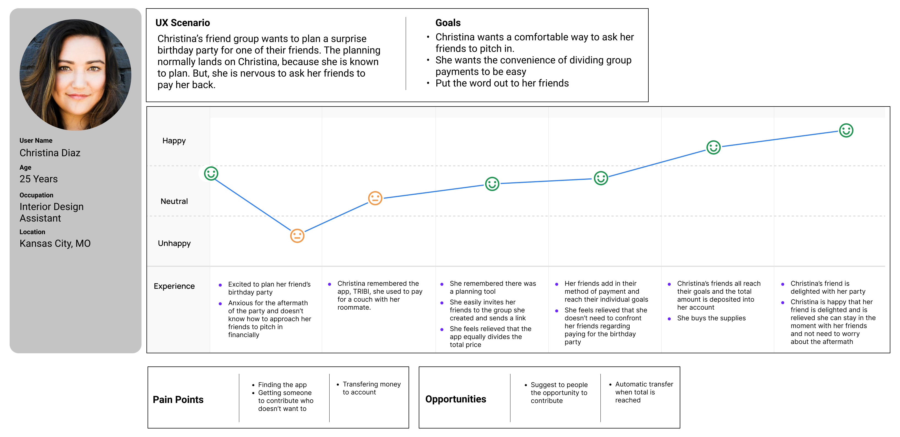Step 4: Interaction Design
This step marked the process of implementing our solutions and new informational architecture into a design.
Wireframe Sketches
After completing the different userflows, we decided to move forward and draw wireframe sketches for each of the flows. These are a few of my sketches for the group creator flow.
Mid-Fidelity Prototype
After completing the different userflows, we decided to move forward and draw wireframe sketches for each of the flows. These are a few of my sketches for the group creator flow.
Prototype Testing
Once our low-fidelity prototypes were ready, we moved to testing our design, which involved users completing tasks and providing their feedback.
The tasks we asked users to perform were the following:
Group Creator Flow
Create a group, set a goal amount of $30, invite members
Contribute $5 and reach your goal of $30. (task 1 continued)
Create a group. Set an indefinite amount to raise, invite members
Contribute $5, raise an indefinite amount and close account once you reach $30 (task 3 continued)
Group Member Flow
Contribute money to group and approve transfer
Pay Simultaneously Flow

Make a group contribution by adding friends
Friends Open Link Flow
Open a link and make a group purchase
After user testing, we made multiple iterations to our lo-fi prototype. We noticed that our users’ needs didn’t align with what we had on our feature prioritization matrix and users found the user flow inconvenient. During our testing users conveyed that they would enjoy the process if they could finish the payment step as fast as they can rather than splitting it.
We rearranged the order of sharing a link with someone. At first we had it in the middle of the payment process but we learned that it interrupted the process that the user was trying to complete so we moved the sharing option towards the end of the payment process.
Our iterated user flows:
1. Group Creater
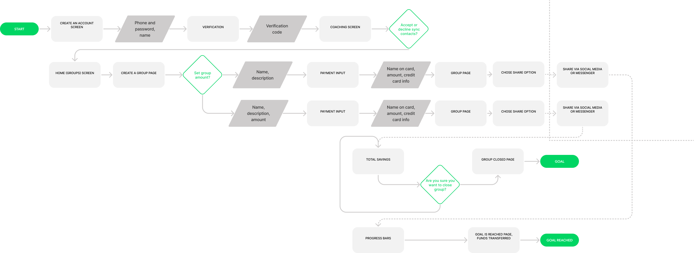2. Group Member
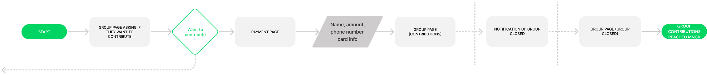3. On a website
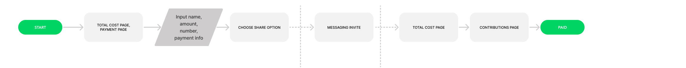High-Fidelity Prototypes
After thorough user testing, we made improvements to the prototypes and then started building the high-fidelity digital prototype. We continued using Figma throughout this prototyping process.
Click on screen to view to interact with prototype!
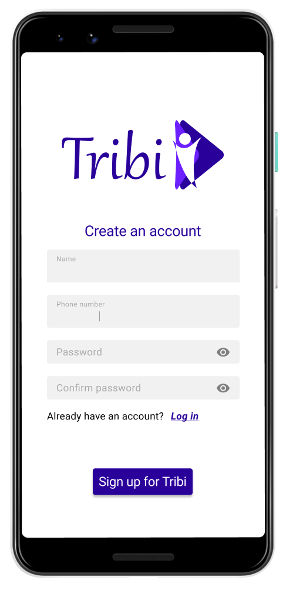Reflection
Key Takeaways
We had a hard time conducting research because we were trying to create a tool that has never been created before. Our first couple interviews were tough because most of our interviewees would assume we were researching about apps like Venmo and Cashapp. Even though our app is similar, that was not the focal point of our app. With Tribi, groups can split and submit payments together instead of individually, rather than Venmoing afterwards. After analyzing our interviews, we learned we received a lot of valuable information. Interviewees would respond, "Well, that would be nice but it doesn't exist yet"". Even though it was hard conducting user research on app that has never been invented yet, we still learned there was a need.
Next Steps
In the interest of time we set aside a few features and ideas which would greatly improve the app and further address the users’ needs. We would have liked to add a feature that allows the creator of the group to disable group members from seeing each others’ payment amounts. We believed adding that option would reduce the pressure to contribute a certain amount. Additionally, we would have liked to find more ways to gear the UI towards a sociable, relaxed tone, in order to alleviate the pain point of talking about money with friends.